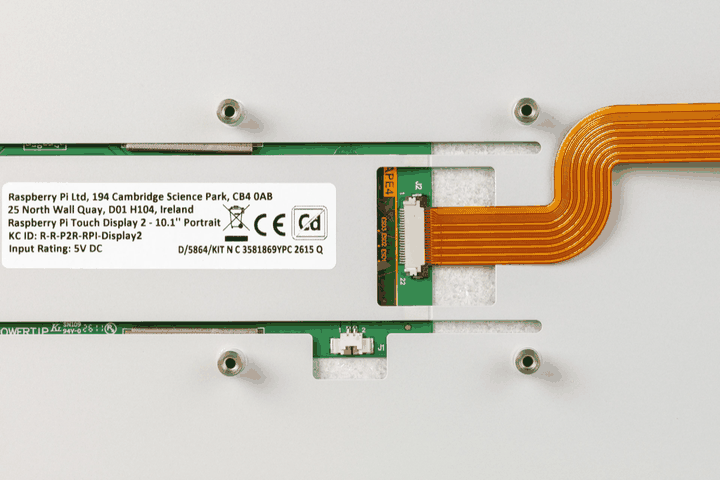
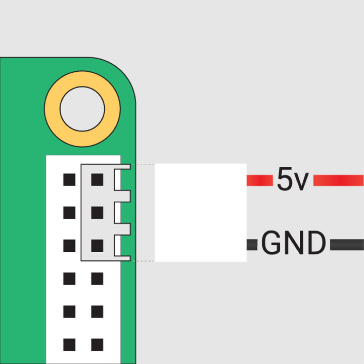

Run the following from the command line to update the device's operating system:
$ sudo apt update && sudo apt full-upgrade
Please run the following from the command line to update the device's EEPROM bootloader:
$ sudo lum-eeprom-update -a
Disconnect the
To connect the Mini – Mini 22-way to 22-way FFC:
Insert the FFC into the Touch Display 2 FFC connector, then slide the retaining clip back into place to secure the cable.
The metal contacts must face upwards, away from the Touch Display 2.

Figure 1. The flat flexible cable correctly attached to the Touch Display 2 10-inch model
Take care not to pinch the FFC in this step. For the full details, click here.
Connect the other end of the FFC to the connector, then slide the retaining clip back into place to secure the cable.
The metal contacts must face towards the Ethernet and USB-A ports.
J1 port on the Touch Display 2.Connect the three-pin end of the GPIO power cable to your
With the USB and Ethernet ports facing down, the power cable must be attached vertically to the top-right of the GPIO header. This means the red 5 V power cable is at the top-right of the pin block.
This results in the red cable connecting to pin 2 (top-right), and the black cable (ground) connecting to pin 6.

Figure 2. The GPIO cable from the Touch Display 2 attaches to the top-right of the GPIO header on the
Now you've connected the
Connect the
The Touch Display 2 turns on when the device boots, but it can take up to one minute for
+ --
Related topic: